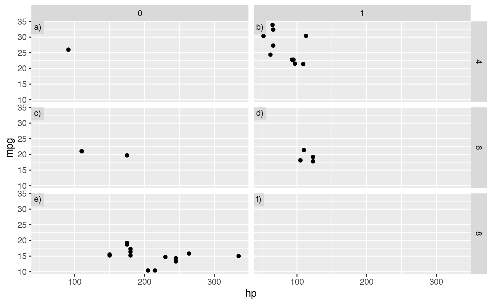
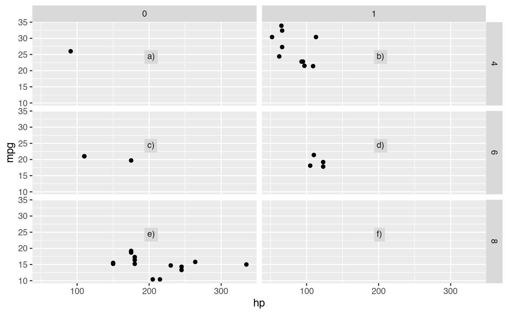
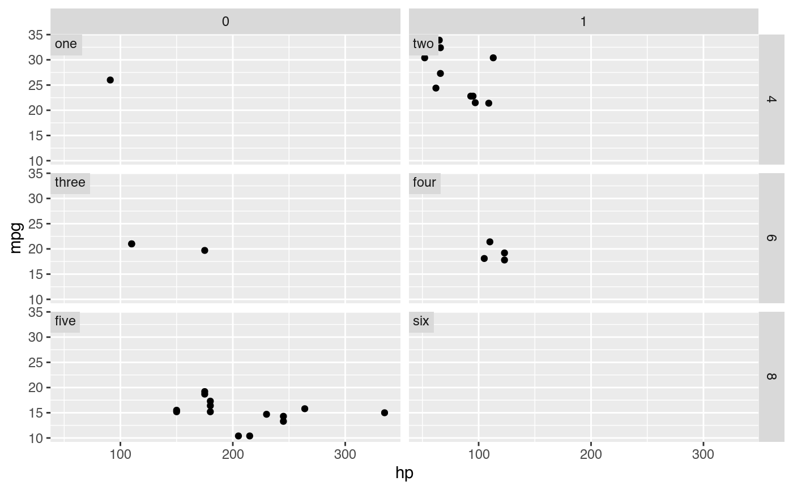
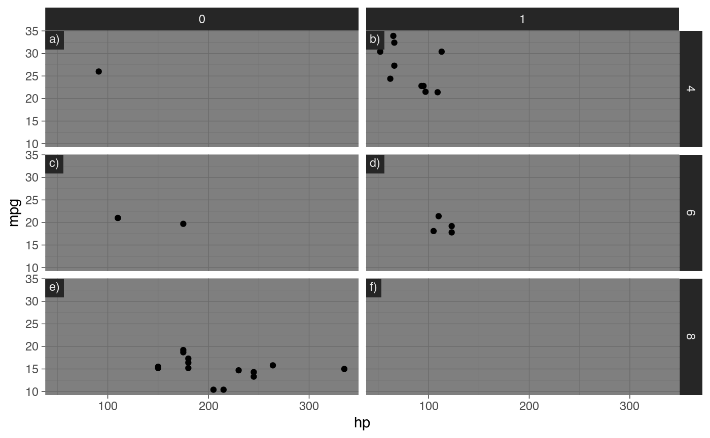
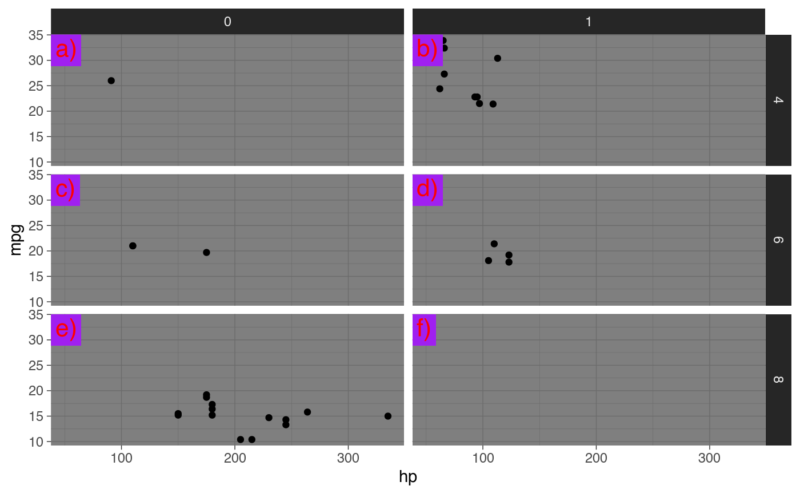

Adds tags to facets
tag_facets.RdAdds tags to facets
tag_facets( tag = c("panel", "rc", "cr"), position = "tl", tag_levels = c("a", "1"), tag_pool = NULL, tag_prefix = "", tag_suffix = ")", tag_sep = "." )
Arguments
| tag | Character indicating the element to tag. Possible values are
|
|---|---|
| position | Character indicating the position of the tag. Options are "tl" (top-left), "tr" (top-right), "br" (bottom-right) and "bl" (bottom-left). Alternatively, for finer control, it can be a list of elements "x", "u", "hjust" and "vjust" that define the position of the tag within each panel. |
| tag_levels | A character vector defining the enumeration format to use
at each level. Possible values are |
| tag_pool | An optional character vector of user-defined "pool" of tags.
If not |
| tag_prefix | Strings that should appear before or after the tag. |
| tag_suffix | Strings that should appear before or after the tag. |
| tag_sep | A separator between different tag levels |
Details
Tags inherit aesthetic properties (size, font, colour, etc...) from strip.text and
strip.background defined by ggplot2::theme(). For fine-grained detail, these can be
overriden by setting tagger.panel.tag.text and tagger.panel.tag.background.
Examples
library(ggplot2) # Base plot g <- ggplot(mtcars, aes(hp, mpg)) + geom_point() + facet_grid(cyl ~ vs) g + tag_facets()g + tag_facets("rc")g + tag_facets(position = "br")# You can get finer control over position. g + tag_facets(position = list(x = 0.5, y = 0.5, hjust = 0, vjust = 0))# Thanks to theme inheritance, tags should look aceptable # out of the box in any theme. g + tag_facets() + theme_dark()# But you can control their appearance and create your own atrocities g + tag_facets() + theme_dark() + theme(tagger.panel.tag.text = element_text(color = "red", size = 16), tagger.panel.tag.background = element_rect(fill = "purple"))